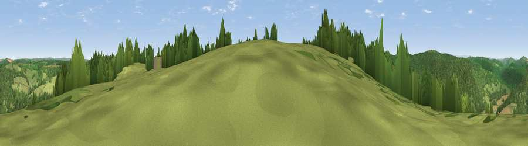

Viewpoint near St Briavels
#21798 in England · top 39% of its area beats it · near St Briavels · path 173 mWhere it is
The exact computed spot (SO 54725 03825). Click the marker for map links.
Public access: the nearest public right of way is about 173 m away — the final stretch may cross private land. Computed from Natural England's CRoW access layer and OpenStreetMap rights of way — not the legal definitive map. Always verify locally.
The view, rendered

A 360° render of this exact spot computed from the terrain model, tree cover and land cover — summer colours, afternoon light, calibrated against photographs of famous viewpoints. Real trees, hedges and buildings will differ in detail.
The panorama
Grey silhouette: terrain skyline in each direction (720 bearings, Earth curvature and refraction included). Dashed green: skyline with trees (+15 m) and buildings (+8 m) as obstacles. Blue strip: how far the ground is visible on each bearing.
Where the view opens
Wedge length = distance to the farthest visible ground on that bearing (vegetation-aware). Rings at 10, 25 and 50 km.
What fills the view
70% woodland · 25% grassland · 4% cropland
Angular shares of the visible panorama (visual magnitude), not map area. Landscape diversity 0.34 (0–1 Shannon).
Key numbers
More beautiful places nearby
The staircase of upgrades: each row has a higher view potential than everything closer. Driving times are estimates from straight-line distance, calibrated against real road routing — check an actual route before setting out.
| Place | Direction | Drive | Score |
|---|---|---|---|
| Viewpoint near St Briavels | SSE · 1 km | ~2 min | 52.4 |
| Viewpoint near Hewelsfield | ESE · 3 km | ~8 min | 69.4 |
| Viewpoint near Hewelsfield | SE · 4 km | ~9 min | 70.7 |
| Buck Stone | N · 8 km | ~17 min | 71.0 |
| Viewpoint near Welsh Newton | NNW · 13 km | ~24 min | 72.0 |
| Viewpoint near Goodrich | N · 15 km | ~27 min | 74.0 |
| Viewpoint near Ruardean | NNE · 16 km | ~28 min | 74.2 |
| Skenchill | NNW · 16 km | ~28 min | 75.8 |
51.73130, -2.65697 · source: screening · position refined by local search. Computed location — check access rights before visiting.